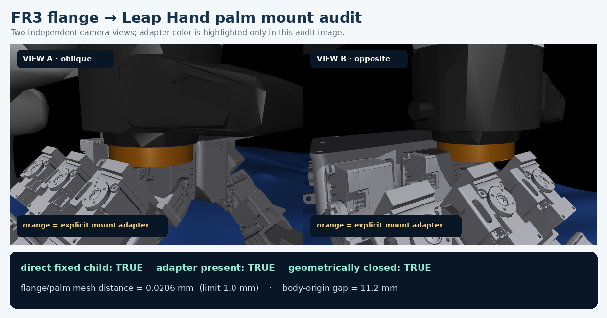
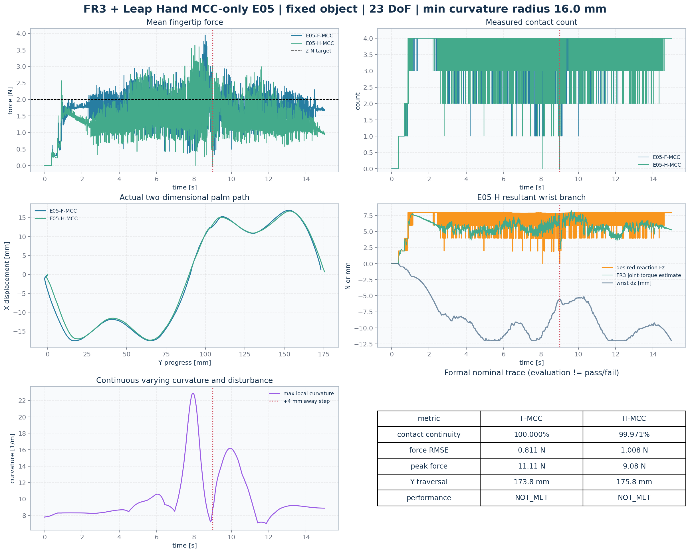
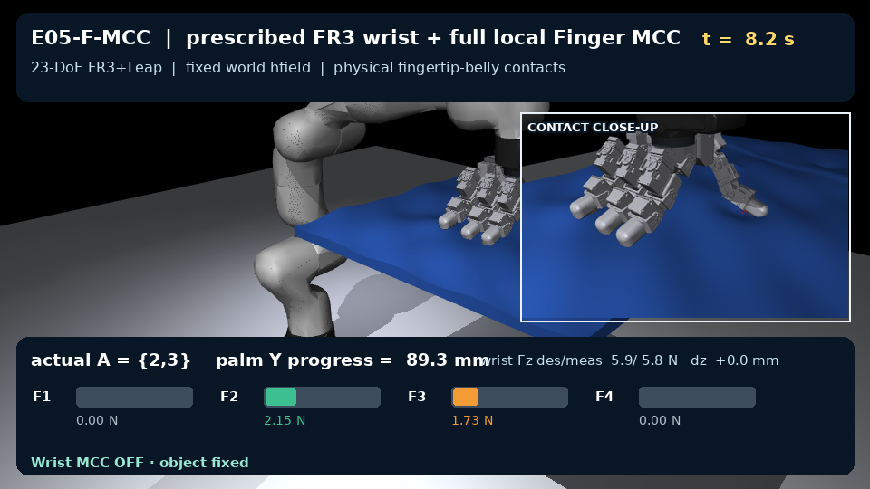

FR3 + Leap Hand：MCC-only E05
两个视频都来自同一冻结对象、trajectory 和 nominal seed。物体固定在 world；画面中的 palm 位移由 7-DoF FR3 真实执行。右上 inset 显示四个真实 fingertip-body belly pads。
E05-F-MCC
规定式 FR3 wrist tracking；四个 Finger MCC 使用完整 local force error。执行状态 EVALUATED，性能 NOT_MET。
E05-H-MCC
同一 nominal trajectory；FR3 Wrist MCC 调 resultant wrench，Finger MCC 只调 internal/differential error。执行状态 EVALUATED，性能 NOT_MET。
安装口审计
橙色仅用于突出显示显式 mount adapter；两个独立视角和几何距离共同确认 FR3 flange 与 Leap palm 闭合。

数值与模型审计


边界：本页只评测 MCC。历史 DP release 仅完成独立 compatibility audit，没有正式 DP 指标；gravity 在冻结协议中关闭，以隔离 contact control，不能把本结果外推为 gravity-on 或硬件结果。